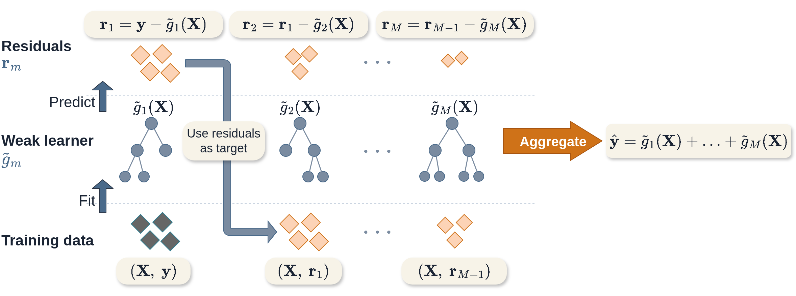

13 Boosting Methods
This page is a work in progress and minor changes will be made over time.
Similarly to random forests, boosting is an ensemble method that creates a powerful model from a combination of weak learners that make poor predictions individually. However, the two methods differ in how individual learners are selected and combined: in random forests, each decision tree is grown independently and predictions are averaged. In boosting, weak learners are fit sequentially with errors from one learner used to train the next, and predictions are made by a weighted linear combination of all learners (Figure 13.1).
13.1 GBMs for Regression
Gradient Boosting Machines (GBMs) are the most widely used family of boosting algorithms. The general idea is to choose a differentiable loss function and iteratively improve predictions by fitting weak learners to the remaining errors from the current model. Figure 13.1 illustrates this process in a least-squares regression setting, where the negative gradient corresponds to the ordinary residual (truth minus prediction). This procedure can be understood as follows:
- An initial simple model is fit to the data to obtain the first set of predictions.
- The errors of this model are computed by comparing predictions to the observed outcomes.
- A weak learner is fit to these errors, focusing on patterns that the previous model failed to capture.
- The new learner is added to the existing model, improving the overall prediction.
- This is repeated with each learner correcting the errors of the current model.
Predictions are therefore built up gradually as a sum of many weak learners, each making a small contribution to the final model.

Practically, a number of important hyper-parameters are used to control and optimize the algorithm whilst reducing overfitting. These are:
Number of iterations, \(M\): The number of iterations is often claimed to be the most important hyper-parameter in GBMs and it has been demonstrated that a value too small will result in underfitting, whilst a value too large will result in overfitting (Buhlmann 2006; Hastie et al. 2001; Schmid and Hothorn 2008a). This underlines the general idea of boosting weak learners to slowly form a single powerful model.
Step-size, \(\nu\): The step-size parameter is a shrinkage parameter that controls the contribution of each weak learner at each iteration. Several studies have demonstrated that GBMs perform better when shrinkage is applied and a value of \(\nu \leq 0.1\) is often suggested (Buhlmann and Hothorn 2007; Hastie et al. 2001; Friedman 2001; Lee et al. 2019; Schmid and Hothorn 2008a). The optimal values of \(\nu\) and \(M\) depend on each other, such that smaller values of \(\nu\) require larger values of \(M\), and vice versa. This is intuitive as smaller \(\nu\) results in slower learning and therefore more iterations are required to fit the model. A practical procedure is to set \(\nu\) to a small value (e.g. \(0.1\)) and \(M\) to a large value, then stop the algorithm when the performance on a validation set stops improving (early stopping). This avoids the need for computationally expensive tuning to find the optimal combination of \(\nu\) and \(M\).
Subsampling proportion, \(\phi\): Sampling a fraction, \(\phi\), of the training data at each iteration can improve performance and reduce runtime (Hastie et al. 2001), with \(\phi = 0.5\) often used. Motivated by the success of bagging in random forests, stochastic gradient boosting (Friedman 1999) randomly samples the data in each iteration. It appears that subsampling performs best when also combined with shrinkage (Hastie et al. 2001). Selection of \(\phi\) is usually performed by nested cross-validation.
In addition to these parameters, the hyper-parameters of the underlying weak learner are also commonly tuned.
If using a decision tree, then it is usual to restrict the number of terminal nodes in the tree to be between \(4\) and \(8\), which corresponds to two or three splits in the tree. Including these hyper-parameters, and some differentiable loss, \(L\), the general gradient boosting machine algorithm is as follows:
Once the model is trained, predictions are made for new data, \(\mathbf{x}^*\) with
\[ \hat{g}_M(\mathbf{x}^*) = \hat{g}_0 + \nu \sum^M_{m=1} \tilde{g}_m(\mathbf{x}^*) \]
GBMs provide a flexible, modular algorithm, primarily comprised of a differentiable loss to minimize, \(L\), and the selection of weak learners. Perhaps the most common weak learners are decision trees, linear least squares (Friedman 2001) and smoothing splines (Bühlmann and Yu 2003). The use of trees means that the structure of the resulting prediction function can vary substantially, for example using stumps (trees with only one split) results in an additive model with main effects only, whereas decision trees with an extra layer yield two-way interactions.
This chapter focuses on tree-based learners, which are primarily used for survival analysis, due to the flexibility demonstrated in Chapter 11. See references at the end of the chapter for other weak learners. Extension to survival analysis therefore follows by considering alternative losses.
13.2 GBMs for Survival Analysis
Unlike other machine learning algorithms that historically ignored survival analysis, early GBM papers considered boosting in a survival context (Ridgeway 1999); though there appears to be a decade gap before further considerations were made in the survival setting. Subsequently, Hothorn et al. (2005), Schmid and Hothorn (2008b), Schmid and Hothorn (2008a), and Binder and Schumacher (2008) adapted GBMs to a framework suitable for survival analysis — the developments discussed in this chapter.
In principle, boosting could be applied to models that directly predict a full survival distribution by optimizing a proper scoring rule (Chapter 8). However, in standard boosting, each iteration updates a single real-valued function, targeting the residual error. When the target is instead a full survival distribution, a scoring rule can be used to aggregate errors across time, which makes it difficult to attribute errors to specific regions of the prediction and therefore to construct effective updates. For this reason, boosting methods in survival analysis are most commonly applied to models that produce a scalar risk score.
This section begins with boosting approaches based on the foundational survival models introduced in ?sec-classical, specifically proportional hazards (PH) and accelerated failure time (AFT) models (Section 13.2.1). In the case of the AFT models, the model parameters are estimated directly, which specifies a full survival distribution prediction. The discussion then extends to approaches that do not assume a specific model form, but instead directly optimize a measure of discrimination (Section 13.2.2), which are usually used to evaluate relative risk predictions (?sec-crank).
13.2.1 Likelihood Boosting
The negative log-likelihood of the semi-parametric PH and fully-parametric AFT models can be derived from the (partial) likelihoods presented in Section 3.5.1. At each iteration, the weak learner in Algorithm 1 is given by,
\[ g_m(\mathbf{x}_i) = \mathbf{x}_i^\top\boldsymbol{\beta}^{(m)}, \tag{13.1}\]
where \(\boldsymbol{\beta}^{(m)}\) are the updated coefficients in iteration \(m\) and \(\boldsymbol{\beta}^{(0)} = 0\).
The Cox partial likelihood (Cox 1972, 1975) is given by
\[ L^{PH}(\boldsymbol{\beta}) = \prod^n_{i:\delta_i=1} \frac{\exp(\eta_i)}{\sum^n_{j \in \mathcal{R}_{t_i}} \exp(\eta_j)} \]
with corresponding negative log-likelihood
\[ -l^{PH}(\boldsymbol{\beta}) = -\sum^n_{i=1} \delta_i \Big[\eta_i \ - \ \log\Big(\sum^n_{j \in \mathcal{R}_{t_i}} \exp(\eta_i)\Big)\Big] \]
where \(\mathcal{R}_{t_i}\) is the set of patients at risk at time \(t_i\) and \(\eta_i = \mathbf{x}_i^\top\boldsymbol{\beta}\).
The gradient of \(-l^{PH}\) at iteration \(m\) is then given by substituting (13.1) for \(\eta_i\) into the partial likelihood (Ridgeway 1999):
\[ r_{im} := \delta_i - \sum^n_{j=1} \delta_j \frac{\mathbb{I}(t_i \geq t_j) \exp(\hat{g}_{m-1}(\mathbf{x}_i))}{\sum_{k \in \mathcal{R}_{t_j}} \exp(\hat{g}_{m-1}(\mathbf{x}_k))}. \]
For non-PH data, boosting an AFT model can outperform boosted PH models (Schmid and Hothorn 2008b). Recall from Section 10.3 the log-linear AFT model is defined by
\[ \log(t_i) = \mu + \eta_i + \sigma\epsilon_i \]
where \(\sigma\) is a scale parameter, \(\epsilon_i\) is an error term, and \(\mu\) is an intercept. By assuming a distribution on \(\epsilon\), a distribution is assumed for the full parametric distribution of the survival time; which has the advantage that further composition through semi-parametric estimators (Chapter 5) is not required to obtain a distribution prediction.
The model is boosted by alternately updating \(\hat{g}_m\) and \(\hat{\sigma}_m\) at each iteration. First the location parameter is updated using boosting as usual, and then the scale parameter is re-estimated given the updated model. Assuming a location-scale distribution with location \(\hat{g}_{m-1}(\mathbf{x}_i)\) and scale \(\hat{\sigma}_{m-1}\), the negative log-likelihood evaluated at the estimates from the previous iteration is (Klein and Moeschberger 2003)
\[ \begin{split} -l^{AFT}_m(\boldsymbol{\beta}) & = -\sum^n_{i=1} \Bigg[ \delta_i\Bigg(- \log\hat{\sigma}_{m-1} + \log f_W\Big(\frac{\log(t_i) - \hat{g}_{m-1}(\mathbf{x}_i)}{\hat{\sigma}_{m-1}}\Big)\Bigg) \\ & + (1-\delta_i)\Bigg(\log S_W\Big(\frac{\log(t_i) - \hat{g}_{m-1}(\mathbf{x}_i)}{\hat{\sigma}_{m-1}}\Big)\Bigg) \Bigg] \end{split}, \]
usually \(\sigma_0 = 1\) (Schmid and Hothorn 2008b). The pseudo-residuals,
\[ r_{im} = -\frac{\partial(-l^{AFT}_m)}{\partial \hat{g}_{m-1}(\mathbf{x}_i)} \]
are computed and used to update \(\hat{g}_m\) following Algorithm 1. The only change to the algorithm is a final step in each iteration where the scale parameter is updated using the newly calculated \(\hat{g}_m\):
\[ \hat{\sigma}_m := \mathop{\mathrm{arg\,min}}_\sigma \ -l^{AFT}_m(\boldsymbol{\beta}). \]
As well as boosting fully-parametric AFTs, one could also consider boosting semi-parametric AFTs, for example using the Gehan loss (Johnson and Long 2011) or using Buckley-James imputation (Wang and Wang 2010). However, known problems with semi-parametric AFT models and the Buckley-James procedure (Wei 1992), as well as a lack of off-shelf implementation, mean that these methods are rarely used in practice.
The flexibility of boosting means extensions to other censoring and truncation types follow simply by replacing the likelihood functions above with the corresponding objective functions in Section 3.5.1.
Penalized Boosting
‘CoxBoost’ is an alternative method to boost Cox models and has been demonstrated to perform well in experiments. The algorithm can be interpreted as a componentwise boosting procedure for Cox models, where at each iteration a single covariate is selected, alongside mandatory (or ‘forced’) covariates, and coefficients are updated using a penalized second-order optimization step (Binder and Schumacher 2008). In medical domains the inclusion of mandatory covariates may be essential, either for model interpretability, or due to prior expert knowledge. CoxBoost deviates from the algorithm presented above by instead using an offset-based approach for generalized linear models (Tutz and Binder 2007).
Let \(\mathcal{I}= \{1,...,p\}\) be the indices of the covariates, let \(\mathcal{I}_{mand}\) be the indices of the mandatory covariates that must be included in all iterations, and let \(\mathcal{I}_{opt} = \mathcal{I}\setminus \mathcal{I}_{mand}\) be the indices of the optional covariates that may be included in any iteration. In each iteration, the algorithm considers models that include all mandatory covariates together with a single optional covariate, selecting the covariate that yields the greatest improvement in the penalized likelihood:
\[ \mathcal{I}_{mk} = \mathcal{I}_{mand} \cup \{k\}, k \in \mathcal{I}_{opt} \]
In addition, a penalty matrix \(\mathbf{P} \in \mathbb{R}^{p \times p}\) is considered such that \(P_{ii} > 0\) implies that covariate \(i\) is penalized and \(P_{ii} = 0\) means no penalization. In practice, this is usually a diagonal matrix (Binder and Schumacher 2008) and by setting \(P_{ii} = 0, i \in \mathcal{I}_{mand}\) and \(P_{ii} > 0, i \not\in \mathcal{I}_{mand}\), only optional (non-mandatory) covariates are penalized. The penalty matrix can vary with each iteration, which allows for a highly flexible approach. However, in implementation a simpler approach is to use the same penalty in each iteration, which could be a single number, so the same penalty is applied to all penalized covariates, or a single matrix, such that the penalty differs between covariates but stays the same in each iteration (Binder 2013).
At the \(m\)-th iteration and the \(k\)-th set of indices to consider (\(k = 1,...,p\)), the loss to optimize is the penalized partial-log likelihood given by
\[ \begin{split} l_{pen}(\gamma_{mk}) &= \sum^n_{i=1} \delta_i \Big[\eta_{i,m-1} + \mathbf{x}_{i,\mathcal{I}_{mk}}\gamma^\top_{mk} -\log\Big(\sum^n_{j = 1} \mathbb{I}(t_j \leq t_i) \exp(\eta_{i,{m-1}} + \mathbf{x}_{i, \mathcal{I}_{mk}}\gamma^\top_{mk})\Big)\Big] \\ &- \lambda\gamma^\top_{mk}\mathbf{P}_{mk}\gamma_{mk} \end{split}, \tag{13.2}\]
where \(\eta_{i,m} = \mathbf{x}_i^\top\boldsymbol{\beta}^{(m)}\), \(\gamma_{mk}\) are the coefficients corresponding to the candidate covariate set \(\mathcal{I}_{mk}\); \(\mathbf{P}_{mk}\) is the penalty matrix; and \(\lambda\) is a penalty hyper-parameter to be tuned or selected.
In each iteration, all potential candidate sets (the union of mandatory covariates and one other covariate) are updated by \[ \hat{\gamma}_{mk} = \mathbf{I}^{-1}_{pen}(\hat{\gamma}_{(m-1)k})U(\hat{\gamma}_{(m-1)k}) \]
where \(U(\gamma)\) and \(\mathbf{I}_{pen}(\gamma)\) are the first and second derivatives of the unpenalized partial-log-likelihood. This is the key difference between CoxBoost and standard gradient boosting as CoxBoost uses updates based on Fisher scoring iterations (including both the first and the second derivatives), whereas the latter only makes use of the gradient (first derivative).
The optimal set is then found as \[ k^* := \mathop{\mathrm{arg\,max}}_k \ l_{pen}(\hat{\gamma}_{mk}) \]
and the estimated coefficients are updated with
\[ \hat{\beta}_m = \hat{\beta}_{m-1} + \hat{\gamma}_{mk^*}, \quad k^* \in \mathcal{I}_{mk} \]
This deviates from the standard GBM algorithm by directly optimizing \(l_{pen}\) and not its gradient, additionally model coefficients are iteratively updated instead of a more general model form.
CoxBoost is extended to the competing risks setting by boosting a subdistribution PH model (Binder et al. 2009). In this setting, (13.2) is replaced by the log-likelihood from the Fine and Gray model (Section 10.2.3) with an analogous penalty function. The rest of the procedure follows the same.
13.2.2 Loss Boosting
Instead of optimizing models based on a given model form, one could instead estimate \(\hat{\eta}\) by optimizing a loss (Part II). Common loss choices are discrimination measures, such as Uno’s or Harrell’s C (Chen et al. 2013; Mayr and Schmid 2014).
Consider Uno’s C (Section 6.1) where the ranking prediction in iteration \(m\) is given by the prediction from the previous iteration:
\[ C_U(\hat{g}_{m-1}, \mathbf{X}, \mathbf{t}, \boldsymbol{\delta}|\tau) = \frac{\sum_{i\neq j} [\hat{G}_{KM}(t_i)]^{-2}\mathbb{I}(t_i < t_j, \hat{g}_{m-1}(\mathbf{x}_i) > \hat{g}_{m-1}(\mathbf{x}_j), t_i < \tau)\delta_i}{\sum_{i\neq j}[\hat{G}_{KM}(t_i)]^{-2}\mathbb{I}(t_i < t_j, t_i < \tau)\delta_i}, \]
where \(\hat{G}_{KM}\) is the Kaplan-Meier estimate of the censoring distribution.
The GBM algorithm requires that the chosen loss be differentiable with respect to \(\hat{g}(\mathbf{x})\). However, \(C_U\) is not differentiable due to the indicator term. Replacing the indicator with a sigmoid function creates a differentiable loss (Ma and Huang 2006):
\[ K(x, y|\omega) = \frac{1}{1 + \exp((y - x)/\omega)}, \]
where \(\omega\) is a tunable hyper-parameter controlling the smoothness of the approximation. Smaller values of \(\omega\) produce a closer approximation to the indicator function but may lead to unstable gradients, whereas larger values yield smoother but more biased approximations.
The measure to optimize is then,
\[ C_{USmooth}(\hat{g}_{m-1}, \mathbf{X}, \mathbf{t}, \boldsymbol{\delta}|\omega) = \sum_{i \neq j} \frac{k_{ij}(\mathbf{t}, \boldsymbol{\delta})}{1 + \exp\big[(\hat{g}_{m-1}(\mathbf{x}_j) - \hat{g}_{m-1}(\mathbf{x}_i))/\omega\big]} \tag{13.3}\]
with
\[ k_{ij}(\mathbf{t}, \boldsymbol{\delta}) = \frac{\delta_i (\hat{G}_{KM}(t_i))^{-2}\mathbb{I}(t_i < t_j)}{\sum_{i \neq j} \delta_i(\hat{G}_{KM}(t_i))^{-2}\mathbb{I}(t_i < t_j)} \]
The GBM algorithm is then followed as normal with the above loss (13.3) and its gradient. This algorithm may be more insensitive to overfitting than others (Mayr et al. 2016), however stability selection (Meinshausen and Bühlmann 2010), which is implemented in off-shelf software packages (Hothorn et al. 2020), can be considered for variable selection.
Similarly to likelihood boosting, flexibility is again a key advantage here for extensions to other censoring and truncation types and also to competing risks. For example, the all-cause logarithmic score introduced in Section 8.5 can be used to boost survival models that optimize overall predictive ability (Alberge et al. 2025).